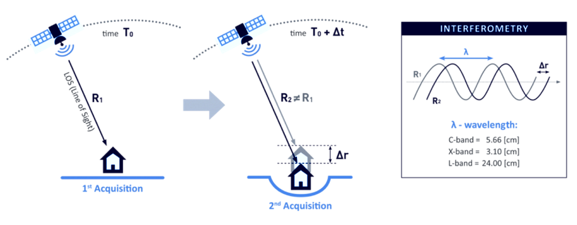
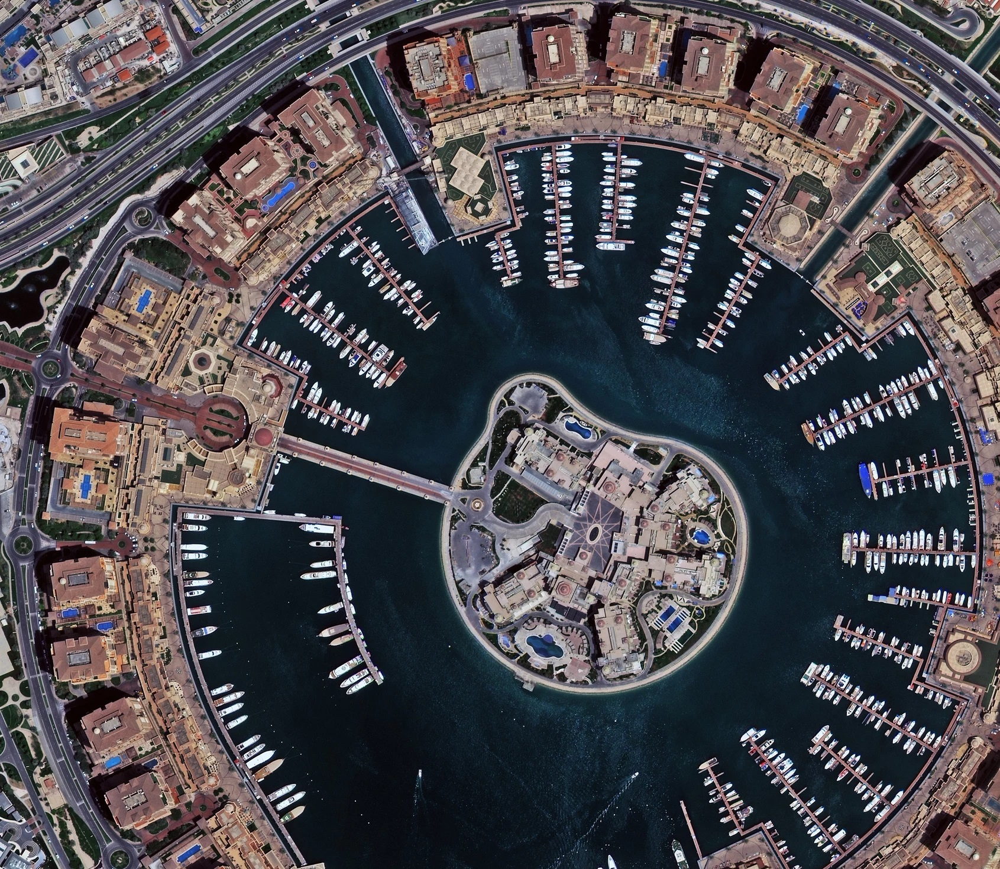
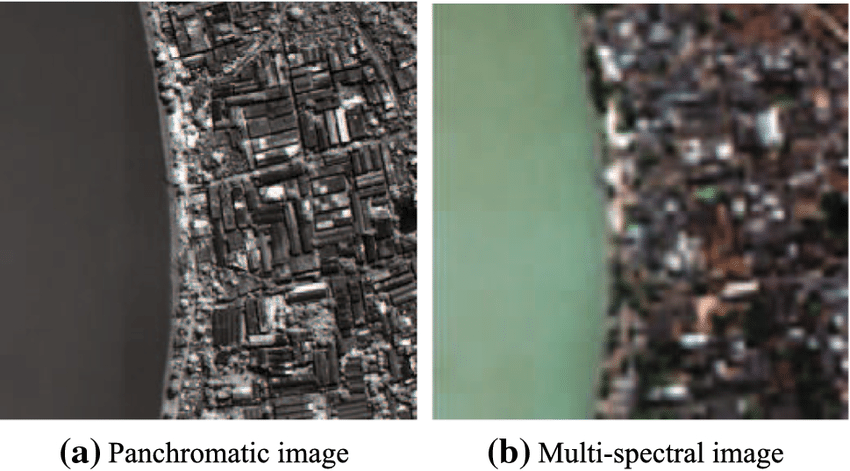
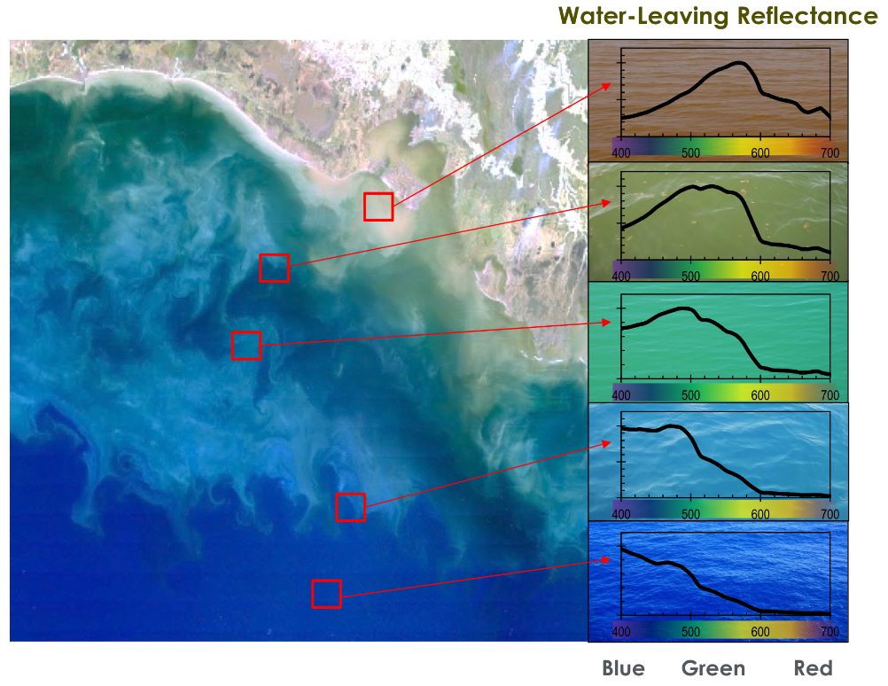
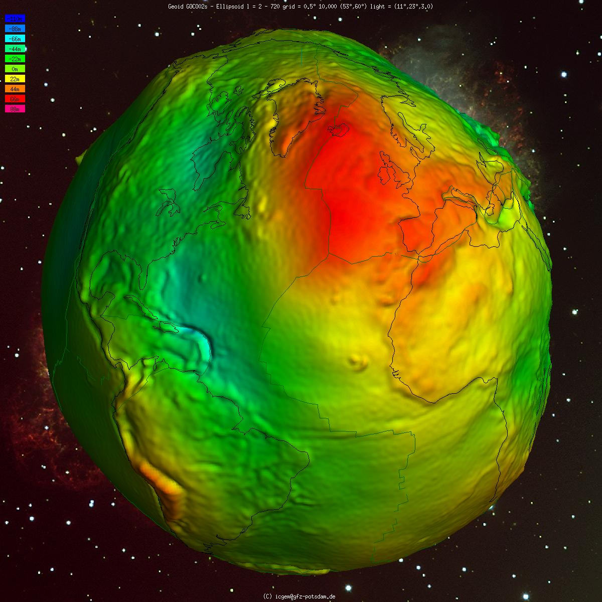

Che dati registrano i satelliti?

Introduzione
Negli ultimi decenni i satelliti sono diventati una delle infrastrutture più strategiche per comprendere, monitorare e gestire il nostro pianeta. Ogni giorno, centinaia di missioni in orbita raccolgono una quantità impressionante di informazioni: immagini ad altissima risoluzione, dati atmosferici, misurazioni sulle superfici terrestri e marine, segnali di navigazione, profili verticali dell’atmosfera, variazioni del campo gravitazionale e magnetico. Non si tratta più soltanto di “foto dallo spazio”, ma di un ecosistema complesso di tecnologie complementari che, insieme, costruiscono la più completa rappresentazione operativa della Terra mai ottenuta nella storia dell’umanità.
In questo articolo analizzeremo tutte le principali fonti di dati satellitari, ordinandole dal più noto al meno conosciuto. Per ogni categoria vedremo cosa misura, a cosa serve, quali applicazioni reali abilita, quali sono le missioni più rappresentative e infine come funziona il sensore che la rende possibile. L’obiettivo è offrire una panoramica chiara ma approfondita, utile sia ai professionisti del settore che a chi desidera comprendere meglio le tecnologie che stanno rivoluzionando il modo in cui osserviamo la Terra.
In questo rapporto analizziamo in dettaglio diciannove categorie distinte di strumentazione satellitare. Per ciascuna, vedremo nel dettaglio il principio fisico di funzionamento, supportato dal formalismo matematico che governa l'interazione tra la radiazione e la materia, ed esamineremo le applicazioni operative che trasformano il dato grezzo in informazione geofisica critica.
In quest'analisi parleremo dei sensori passivi che misurano la radiazione solare riflessa o l'emissione termica terrestre, dei sensori attivi che illuminano la superficie con impulsi propri, come anche dei sensori di opportunità che sfruttano segnali esistenti per inferire proprietà ambientali.
GNSS – Sistemi Globali di Navigazione Satellitare
I dati GNSS sono nati in ambito bellico, ma si sono rivelati fondamentali in molti campi quoditiani. Consentono posizionamento e navigazione autonoma su scala globale e forniscono un riferimento temporale standard.
I sistemi GNSS (come GPS, Galileo, GLONASS, BeiDou) trasmettono segnali a radiofrequenza contenenti informazioni orbitale e temporale dagli orologi atomici a bordo. Misurando il tempo impiegato dal segnale a raggiungere un ricevitore a Terra, si calcola la distanza e quindi la posizione dell’utente tramite trilaterazione con almeno 4 satelliti visibili. GNSS fornisce quindi misure di posizionamento (latitudine, longitudine, quota) e tempo assoluto estremamente precise.
Sono usati in geodesia (reti di stazioni GNSS monitorano il movimento tettonico e definiscono i riferimenti globali), in agricoltura di precisione, mappatura e GIS, trasporti terrestri, aerei e navali, e sincronizzazione di reti elettriche e telecomunicazioni. Ad esempio, l’uso combinato dei vari sistemi GNSS consente oggi ricevitori multi-costellazione con copertura globale e maggiore affidabilità.
Radio occultazione GNSS (GNSS-RO): sondaggio atmosferico di precisione
La Radio Occultazione GNSS (GNSS-RO) rappresenta una delle tecniche di telerilevamento più eleganti e robuste, trasformando i segnali di navigazione, originariamente concepiti per il posizionamento, in strumenti di alta precisione per la meteorologia e la climatologia.
Principio fisico e formulazione matematica
Un ricevitore GNSS capta i segnali codificati trasmessi dai satelliti, che includono il tempo di trasmissione.
Dal confronto con il tempo locale (dopo sincronizzazione) si ottiene la distanza satellitare (pseudo-range). Intersecando le sfere di distanza di 4 o più satelliti si risolve la posizione tridimensionale e la differenza di tempo del ricevitore. Il principio fisico è la misura del tempo di volo del segnale ($t$) e la relazione $$d = c \cdot t,$$ dove $c$ è la velocità della luce.
Correzioni relativistiche e atmosferiche (ionosfera e troposfera) vanno applicate per ottenere accuratezze al livello del metro o inferiori.
Sistemi differenziali e tecniche come RTK (Real-Time Kinematic) consentono di raggiungere precisione al centimetro correggendo gli errori residui tramite stazioni di riferimento. In sintesi, GNSS misura con precisione posizione e tempo su scala globale, costituendo un’infrastruttura invisibile ma cruciale per la moderna società.
Ti avverto, ora mi tolgo il cappello da divulgatore e indosso quello da matematico :)
Il parametro fondamentale misurato è il ritardo di fase in eccesso, da cui si deriva l'angolo di curvatura ($\alpha$) in funzione del parametro d'impatto ($a$). In un'atmosfera a simmetria sferica locale, la relazione tra l'angolo di curvatura e l'indice di rifrazione $n(r)$ è governata dalla legge di Snell generalizzata e può essere invertita tramite la trasformata di Abel inversa 1:
$$n(r) = \exp \left( \frac{1}{\pi} \int_x^\infty \frac{\alpha(x)}{\sqrt{x^2 - a^2}} \, dx \right)$$
Dove $x = n(r) \cdot r$ è il raggio rifrattivo e $\alpha(x)$ è il Bending angle corretto. Una volta ottenuto il profilo dell'indice di rifrazione, si calcola la rifrattività $N$, definita come $N = (n-1) \times 10^6$. La relazione tra la rifrattività e le variabili termodinamiche atmosferiche è descritta dall'equazione di Smith-Weintraub2:
$$N = 77.6 \frac{P}{T} + 3.73 \times 10^5 \frac{e}{T^2} - 40.3 \frac{n_e}{f^2}$$
In questa equazione:
$P$ è la pressione atmosferica totale (hPa).
$T$ è la temperatura (K).
$e$ è la pressione parziale del vapore acqueo (hPa).
$n_e$ è la densità elettronica, che domina il termine ionosferico (significativo sopra i 60-80 km).
$f$ è la frequenza del segnale.
Utilità e applicazioni critiche
La forza della GNSS-RO risiede nella sua natura di misura "autocalibrante": poiché si basa su misurazioni di tempo e frequenza (garantite da orologi atomici), non soffre di deriva strumentale, rendendola ideale per il monitoraggio climatico a lungo termine.3
Meteorologia Operativa (NWP): I profili RO sono essenziali per ancorare i modelli meteorologici nella troposfera superiore e nella stratosfera, dove altri dati sono scarsi, correggendo i bias di temperatura.4
Climatologia: Monitoraggio dei trend di temperatura globale e della tropopausa con precisione assoluta.
Space Weather: Misurazione del Contenuto Totale di Elettroni (TEC) e delle scintillazioni ionosferiche, cruciali per la sicurezza delle comunicazioni satellitari.5
Missioni di riferimento
La tecnica è stata pionierizzata dalla missione GPS/MET e resa operativa dalla costellazione COSMIC-1 (Taiwan/USA). Attualmente, COSMIC-2 fornisce una copertura densa nelle latitudini equatoriali, ottimizzata per lo studio degli uragani e della ionosfera.3 Parallelamente, il settore commerciale "NewSpace" ha rivoluzionato questo campo: Spire Global, con la sua costellazione di oltre 100 CubeSat LEMUR, e PlanetIQ, forniscono migliaia di misurazioni giornaliere, integrando i dati istituzionali.6
Riflettometria GNSS (GNSS-R): il radar bistatico di opportunità
Mentre la Radio Occultazione sfrutta i segnali trasmessi attraverso l'atmosfera, la Riflettometria GNSS (GNSS-R) analizza i segnali riflessi dalla superficie terrestre, operando come un radar bistatico multi-statico.
Cosa misura?
La GNSS-R permette di estrarre proprietà geofisiche dalla superficie riflettente:
Oceani: Velocità del vento superficiale e rugosità media (Mean Square Slope).
Suolo: Umidità del suolo (Soil Moisture) e biomassa vegetale.
Criosfera: Estensione e spessore del ghiaccio marino.
Funzionamento fisico e formule
Il ricevitore misura la potenza del segnale riflesso in funzione del ritardo temporale (delay) e dello spostamento Doppler, generando una Delay Doppler Map (DDM). La potenza ricevuta $P_r$ è descritta dall'equazione radar bistatica 6:
$$ P_r(\tau, f_D) = \frac{P_t G_t \lambda^2}{(4\pi)^3} \iint_A \frac{G_r(\vec{r}) \sigma^0(\vec{r}) \chi^2(\tau, f_D)}{R_t^2(\vec{r}) R_r^2(\vec{r})} d\vec{r} $$
Dove:
$\sigma^0$ è il coefficiente di scattering bistatico della superficie.
$\chi^2$ è la funzione di ambiguità (Woodward Ambiguity Function) che descrive la risposta del sistema.
$R_t$ e $R_r$ sono le distanze dal trasmettitore e dal ricevitore al punto di riflessione speculare.
Su superfici calme (speculari), l'energia è concentrata in un punto della DDM. Su superfici rugose (oceano agitato dal vento), l'energia si disperde a formare un "ferro di cavallo" nella mappa DDM; l'ampiezza di questa dispersione è direttamente correlata alla velocità del vento.
🎮 Simulazione interattiva. Vuoi vedere come cambiano le Delay Doppler Map al variare di vento, quota e angolo di incidenza? Prova la simulazione DDM GNSS-R basata sul modello qui descritto.
Il grafico mostra la distribuzione di potenza del segnale riflesso nello spazio delay-Doppler. In condizioni di mare mosso (vento ~10-15 m/s), l'energia si disperde dalla posizione speculare (delay=0, Doppler=0) formando la caratteristica "horseshoe shape" (ferro di cavallo) in un grafico 2D. In questo caso abbiamo
- Asse X (Doppler): Spostamento in frequenza dovuto al moto relativo satellite-superficie
- Asse Y (Delay): Ritardo temporale rispetto al percorso speculare diretto
- Asse Z (Power): Intensità del segnale riflesso
I picchi multipli lungo l'asse Doppler indicano che la rugosità superficiale (onde) genera scattering da un'ampia glistening zone, con contributi da punti a diverse velocità relative. Più il mare è agitato, più la DDM si "apre" lateralmente e il picco centrale si attenua.
Alcune note sull'integrale di superficie
Nel GNSS-R, il segnale non si riflette da un singolo punto (come in un radar monostatico con un obiettivo puntiforme), ma si diffonde (scattera) su un'ampia area ellittica sulla superficie del mare, nota come zona di Fresnel o area di diffusione illuminata.
Ogni piccolo elemento di superficie all'interno di quest'area contribuisce alla potenza totale ricevuta dal satellite.
Per trovare la potenza totale ($P_r$) che arriva al ricevitore, dobbiamo sommare (integrare) i contributi di potenza di tutti questi piccoli elementi di superficie.
La superficie di diffusione ($A$) è definita da due coordinate ortogonali (che possono essere spaziali o legate al segnale) che giacciono sul piano di diffusione.
L'elemento differenziale $\mathrm{d} \vec{r}$ in questo contesto rappresenta $\mathrm{d} S$ o $\mathrm{d} A$ (elemento differenziale di superficie).
Utilità e applicazioni
L'applicazione "killer" della GNSS-R è il monitoraggio dei cicloni tropicali7. A differenza dei radiometri ottici (bloccati dalle nubi) o degli scatterometri in banda Ku (attenuati dalla pioggia intensa), i segnali GNSS in banda L penetrano le precipitazioni intense8, permettendo di misurare la velocità del vento nell'occhio del ciclone.
In ambito terrestre, la tecnica fornisce mappe di umidità del suolo ad alta risoluzione temporale, essenziali per la previsione delle piene e l'agricoltura.
Missioni
Ovviamente tra le missioni non posso non citare quella da cui ho preso gran parte di queste informazioni, ovvero CYGNSS della Nasa, ma non è l'unica.
CYGNSS (NASA): Una costellazione di 8 microsatelliti lanciata per studiare l'intensificazione degli uragani, che ha dimostrato capacità sorprendenti anche nel monitoraggio delle zone umide tropicali.
FSSCat (ESA): Missione basata su due CubeSat 6U che combinava GNSS-R con un sensore iperspettrale ottico, vincitrice del Copernicus Masters. La missione è durata circa un anno. 9
Spire Global: Offre prodotti commerciali di riflettometria per il monitoraggio marittimo e del ghiaccio marino, ma non solo.6
Synthetic Aperture Radar: SAR
Radar ad apertura sintetica (SAR): imaging a microonde ognitempo
SAR rappresenta lo strumento principale per l'osservazione della superficie solida in ogni condizione meteorologica e di illuminazione, grazie alla sua natura attiva e alla lunghezza d'onda delle microonde.
Cosa misura?
I radar ad apertura sintetica inviano attivamente onde elettromagnetiche (microonde) verso la superficie terrestre e ne misurano l’eco retrodiffusa, registrandone l’intensità e la fase al ritorno. A differenza dei sensori ottici, un SAR illumina la scena con impulsi propri (tipicamente nelle bande centimetriche: L, C, X, ecc.) e cattura le microonde riflesse dagli oggetti al suolo. Ciò fornisce immagini in cui la “luminosità” di ogni pixel è legata al coefficiente di retro-diffusione radar (backscatter), che dipende dalla rugosità, dalla struttura e dal contenuto d’acqua del bersaglio. Ad esempio, superfici lisce (acque calme) riflettono poca energia verso il radar apparendo scure, mentre aree rugose o con spigoli (come edifici, rocce fratturate, vegetazione fitta) appaiono brillanti.
Misurando anche la fase della microonda retrodiffusa, i sistemi SAR possono rilevare con estrema sensibilità differenze di distanza nell’ordine dei millimetri, aprendo la strada all’interferometria (InSAR, vedi sezione successiva). I radar SAR operano in varie polarizzazioni (HH, VV, HV, VH), misurando componenti diverse del vettore campo elettromagnetico, il che aggiunge informazioni sulla geometria dei bersagli e sulla presenza di vegetazione.
Il SAR restituisce immagini complesse (nel senso matematico del termine) dove ogni pixel contiene:
Ampiezza: Correlata alla rugosità superficiale, alla costante dielettrica (umidità) e alla geometria locale.
Fase: Correlata alla distanza geometrica sensore-bersaglio, fondamentale per le applicazioni interferometriche.
Funzionamento fisico e formule
Per ottenere un'alta risoluzione spaziale in direzione azimutale (lungo la traccia) senza impiegare antenne chilometriche, il SAR sfrutta il movimento del satellite per sintetizzare un'apertura virtuale10.
Elaborando coerentemente la storia di fase degli echi di ritorno (effetto Doppler), la risoluzione azimutale teorica $\delta_a$ diventa indipendente dalla distanza ed è pari a metà della lunghezza dell'antenna reale $L_a$11:
$$\delta_a = \frac{L_a}{2}$$
La risoluzione in range (perpendicolare alla traccia) è determinata dalla larghezza di banda $B$ dell'impulso trasmesso (spesso un chirp modulato in frequenza, dove il chirp è un segnale la cui frequenza varia nel tempo):
$$\delta_r = \frac{c}{2B \sin(\theta)}$$
Dove $\theta$ è l'angolo di incidenza. L'equazione di fase $\phi$ per un pixel a distanza $R$ è data da:
$$\phi = -\frac{4\pi R}{\lambda} + \phi_{scatt}$$
La frazione $4\pi R / \lambda$ indica che la fase compie un ciclo completo ogni volta che la distanza cambia di mezza lunghezza d'onda ($\lambda/2$).
Utilità e applicazioni
Il vantaggio principale del SAR è la sua capacità di osservare la Terra con ogni condizione di illuminazione e meteorologica: essendo attivo, non dipende dal Sole né è ostacolato dalle nubi (le microonde attraversano la copertura nuvolosa). Questo rende i SAR ideali per monitorare regioni frequentemente coperte da nubi (zone tropicali) o per sorvegliare aree polari durante la lunga notte invernale.
Le immagini SAR trovano impiego in cartografia di suoli umidi e alluvionati (il segnale penetra un po’ la vegetazione e riflette fortemente da terreni saturi d’acqua, utilissimo in caso di inondazioni), in agricoltura (stima dell’umidità del suolo e fase fenologica delle colture: la dispersione del segnale varia con la struttura del fogliame), nella sorveglianza marittima (rilevazione di navi e di chiazze di petrolio: il petrolio calma il mare e appare scuro sul SAR, facilitando l’individuazione di sversamenti).
In geologia e gestione del territorio, i SAR mappano deformazioni del terreno e frane tramite InSAR (si veda oltre), mentre in forestry la polarimetria SAR aiuta a stimare la biomassa forestale (missioni P-band come BIOMASS). Inoltre, i SAR permettono di rilevare cambiamenti improvvisi: grazie a passaggi frequenti, individuano il disboscamento illegale, il movimento di ghiacciai, i nuovi edifici o i danni da disastri confrontando immagini prima/dopo (change detection). In ambito militare e di intelligence, l’osservazione radar è cruciale perché fornisce immagini giorno/notte e all-weather, rivelando installazioni camuffate e movimenti.
In conclusione la versatilità dei sistemi SAR è immensa12:
Monitoraggio Marittimo: Rilevamento di navi, oil spills (che appaiono scuri per soppressione delle onde capillari) e classificazione del ghiaccio marino.
Agricoltura: Monitoraggio della crescita delle colture (sensibilità alla biomassa e struttura) e dell'umidità del suolo.
Gestione Emergenze: Mappatura rapida delle inondazioni (l'acqua calma appare nera per riflessione speculare lontano dal sensore).
Missioni
Le principali missioni sono:
Sentinel-1 (ESA/Copernicus): La missione di riferimento in banda C, che fornisce dati globali con politica open access, cruciale per l'interferometria operativa.12
COSMO-SkyMed (ASI/Italia) & TerraSAR-X (DLR/Germania): Sistemi in banda X ad altissima risoluzione per usi duali civili/militari.
NISAR (NASA/ISRO): Missione futura in banda L ed S, focalizzata sulla biomassa e sulla deformazione crostale globale.
Interferometria SAR (InSAR): la geodesia dallo spazio
L'InSAR è una tecnica derivata dal SAR che sfrutta la differenza di fase tra due acquisizioni per misurare la topografia o le deformazioni millimetriche della superficie.
Cosa misura
L’Interferometria SAR sfrutta la fase del segnale radar registrato da due immagini SAR acquisite da orbite leggermente diverse (Interferometria spaziale) o a tempi diversi (Interferometria differenziale temporale) per misurare minime differenze di distanza e quindi variazioni di quota o di spostamento della superficie terrestre.
In pratica, combinando due immagini SAR della stessa area, la differenza di fase tra i pixel genera frange d’interferenza proporzionali alla differenza di percorso ottico dell’onda radar.
Nel caso di InSAR topografica (es. missione SRTM o TanDEM-X), due antenne (o satelliti in formazione) osservano simultaneamente la superficie: la fase differenziale dipende dall’altitudine del suolo e consente di derivare modelli digitali di elevazione (DEM) ad alta risoluzione.
Nell’InSAR differenziale (DInSAR), si usano due passaggi successivi a distanza di tempo $\Delta t$: se la superficie nel frattempo è deformata (abbassata o sollevata) di pochi millimetri o centimetri, tale differenza appare come variazione di fase tra le due immagini.
Si generano così interferogrammi a falsi colori con frange concentriche, ognuna corrispondente tipicamente a uno spostamento line-of-sight di mezza lunghezza d’onda ($≈2.8$ cm per Sentinel-1 in banda C).
Misurando il numero e spaziatura delle frange, si ottiene il campo di deformazione 2D della superficie proiettato sulla linea di vista del radar. L’InSAR è quindi in grado di misurare microscopici movimenti del terreno (ordine mm) su ampie aree, rilevando fenomeni lenti e progressivi invisibili ad occhio nudo. Anche spostamenti co-sismici repentini (terremoti) o rapide deformazioni vulcaniche generano pattern interferometrici caratteristici (frange circolari attorno all’epicentro o al cratere).
Funzionamento fisico e formule
La differenza di fase interferometrica $\Delta \phi$ tra due immagini è composta da diversi contributi:
$$ \Delta \phi = \Delta \phi_{geom} + \Delta \phi_{topo} + \Delta \phi_{def} + \Delta \phi_{atm} + \Delta \phi_{noise} $$
$\Delta \phi_{def}$ è la fase dovuta allo spostamento del suolo.
$\Delta \phi_{topo}$ è legata alla topografia residua.
$\Delta \phi_{atm}$ è il ritardo atmosferico (spesso il principale termine di errore).
La relazione tra la deformazione $d$ e la fase "srotolata" (unwrapped) è 13:
$$d = \frac{\lambda}{4\pi} \Delta \phi_{unwrapped}$$
Per un satellite in banda C come Sentinel-1 ($\lambda \approx 5.6$ cm), una frangia di interferenza ($2\pi$) corrisponde a uno spostamento di circa 2.8 cm.14

_Figura 01: Frange interferometriche e deformazione misurata: esempio di interferogramma. Le frange di fase colorate rappresentano spostamenti millimetrici della superficie rispetto alla linea di vista del radar_Applicazioni
Le principali sono:
Tettonica e Vulcanologia: Misurazione dei campi di deformazione post-sismica e del "respiro" dei vulcani (inflazione/deflazione delle camere magmatiche).15
Subsidenza Urbana: Monitoraggio della stabilità di edifici e infrastrutture critiche con tecniche avanzate come i Persistent Scatterers (PS-InSAR).12
Radar altimetria: topografia degli oceani e dei ghiacci
I radar altimetri misurano con precisione la distanza verticale tra il satellite e la superficie sottostante, calcolata dal tempo di andata e ritorno di impulsi radar inviati perpendicolarmente al suolo (nadir).
L'altimetria radar nadirale è la tecnica fondamentale per quantificare l'innalzamento del livello del mare e la circolazione oceanica.
Cosa misura?
Come ho già accennato prima, misura la distanza verticale (range) tra il satellite e la superficie al nadir. Combinando questa misura con l'orbita precisa e le correzioni geofisiche, si ottiene:
Livello del Mare (Sea Surface Height - SSH).
Altezza Significativa delle Onde (SWH).
Velocità del vento (dall'intensità del backscatter).
L'obiettivo da misurare è la quota della superficie (oceano, terra, ghiaccio) rispetto ad un ellissoide di riferimento. In ambito oceanografico, questa misura, sottratta dell’orbita del satellite nota in un sistema geodetico, fornisce l’altezza della superficie del mare (Sea Surface Height, SSH) rispetto al geoide. Sull’oceano aperto, variazioni di SSH di pochi centimetri riflettono correnti marine, maree e l’innalzamento medio del livello del mare.
Gli altimetri misurano anche parametri secondari: analizzando la forma e potenza dell’eco radar (lo waveform), si ricava la rugosità della superficie e quindi l’altezza significativa delle onde e la velocità del vento sul mare.
Su superfici continentali, l’altimetro può misurare l’altezza dei laghi e dei grandi fiumi, nonché la topografia media dei terreni (anche se con risoluzione spaziale limitata dall’ampio footprint radar, tipicamente è di qualche km).
Sulle calotte glaciali, radar altimetri specializzati (es. CryoSat-2) misurano la quota della neve/ghiaccio e rilevano variazioni nel tempo dello spessore dei ghiacci. Nei nuovi altimetri “a apertura sintetica” (SAR altimetry) l’uso di elaborazione Doppler migliora la risoluzione spaziale lungo traccia (∼300 m) permettendo misure più accurate in prossimità di coste e su corpi idrici più piccoli.
Funzionamento fisico e formule
L'altimetro emette un impulso radar e registra l'eco di ritorno.
La forma d'onda dell'eco (waveform) è modellata analiticamente dal Modello di Brown, che descrive la convoluzione tra la risposta del sistema, la densità di probabilità delle altezze delle onde e la risposta impulsiva della superficie piatta.17
La tecnica SAR Altimetry (o Delay-Doppler), introdotta da CryoSat-2 e Sentinel-3, migliora la risoluzione lungo traccia (~300m) focalizzando l'energia in celle Doppler, permettendo di misurare con precisione anche tra i ghiacci marini e nelle acque costiere.18
Missioni
Sentinel-3 (SRAL): Altimetro SAR operativo per oceano e ghiacci.
Jason-3 / Sentinel-6 Michael Freilich: La serie di riferimento per la continuità climatica del livello medio del mare (GMSL).
SWOT (Surface Water and Ocean Topography): Interferometria radar ad ampio swath (Ka-band) per estendere l'altimetria dal profilo 1D alla mappa 2D.
Sensori passivi e ottici
Ora cambiamo radicalmente argomento, parliamo di sensori passivi, quelli più simili alle classiche macchinette fotografiche o alle fotocamere dei nostri smartphone.
I sensori ottici passivi a bordo dei satelliti catturano la radiazione elettromagnetica solare riflessa dalla superficie terrestre (nelle bande del visibile, infrarosso vicino e infrarosso a onde corte) e, in alcuni casi, l’emissione termica nell’infrarosso termico.
Essi forniscono dunque misure di radianza riflessa o riflettanza della superficie per ciascuna banda spettrale. Nel caso di bande termiche (tipicamente presenti su satelliti come Landsat o Sentinel-3), misurano la radianza termica emessa legata alla temperatura superficiale.
Immagini pancromatiche: risoluzione geometrica estrema
Le immagini ottiche sono intuitive e ricche di informazioni, trovando impiego in mappatura ambientale, gestione del territorio, agricoltura e monitoraggio forestale, pianificazione urbana e sorveglianza di emergenze.
Cosa misura
In modalità pancromatica viene registrata l’intensità integrata su un ampio intervallo spettrale (ad es. 0,5–0,8 μm, come WorldView-3), producendo immagini in bianco e nero ad alta risoluzione spaziale.
In pratica, viene registrata la radianza integrata su un'unica banda spettrale molto ampia (tipicamente visibile + vicino infrarosso, 0.4 - 0.9 $\mu m$ Landsat 7).
Landsat 8 ha un range ristretto 0.50-0.68 $\mu m$ per evitare lo scattering atmosferico.
Funzionamento fisico
L'ampia larghezza di banda permette di raccogliere un elevato numero di fotoni, garantendo un alto Rapporto Segnale-Rumore (SNR). Questo consente di ridurre la dimensione del pixel (IFOV) mantenendo tempi di integrazione brevi, necessari per evitare il motion blur orbitale. La risoluzione spaziale può scendere sotto i 30 cm nelle piattaforme commerciali moderne, come Superview Neo-1.19
Applicazioni e pansharpening
La banda pancromatica è spesso usata in sinergia con bande multispettrali a bassa risoluzione tramite tecniche di Pansharpening. L'immagine risultante combina l'alta fedeltà geometrica del pancromatico con l'informazione cromatica del multispettrale. Una relazione semplificata per la fusione è 20:
$$I_{Pan} \approx \sum_i \alpha_i \cdot I_{MS, i}$$
Questa è la condizione fisica di partenza ed esprime il fatto che l'energia registrata dal sensore pancromatico (a banda larga) dovrebbe idealmente corrispondere alla somma pesata delle energie registrate dalle bande multispettrali (a banda stretta) che ricadono nel suo intervallo spettrale.
I coefficienti $\alpha_i$ rappresentano i pesi spettrali. Poiché il sensore pancromatico non ha una sensibilità piatta (cioè non "vede" tutti i colori con la stessa efficienza), ogni banda multispettrale contribuisce al segnale Pan in modo diverso. Ad esempio, se il sensore Pan è molto sensibile al rosso e poco al blu, il peso $\alpha_i$ del canale rosso sarà maggiore.
Di seguito un esempio di applicazione del pansharpening.21

Figura 02: _Skyline di Doha ripreso da una scena pancromatica sub-metrica: la risoluzione geometrica estrema consente di distinguere singoli edifici e infrastrutture urbane._Missioni
Maxar (WorldView Legion), Airbus (Pléiades Neo) e Superview Neo-1: Risoluzioni commerciali leader di mercato (fino a 30 cm).
Landsat 8/9: Banda pancromatica a 15m per affinare le bande spettrali a 30m.22
Imaging multispettrale: il colore della terra
Le immagini ottiche servono a identificare tipologie di suolo e uso del suolo (coltivazioni, foreste, aree urbane), a monitorare bacini idrici, ghiacciai e neve, e a documentare eventi come incendi, alluvioni o frane.
Lo standard per il monitoraggio ambientale globale, che acquisisce immagini in un numero discreto di bande spettrali (da 4 a 15 circa).
Le immagini multispettrali permettono ad esempio di distinguere vegetazione sana da quella malata attraverso indici come NDVI (Normalized Difference Vegetation Index). L’NDVI si calcola dalle riflettanze nel vicino infrarosso (NIR) e rosso (R): $$NDVI = \frac{NIR - R}{NIR + R},$$ ed è ampiamente utilizzato per quantificare la densità e il vigore della copertura vegetale.
Cosa misura
In modalità multispettrale, il sensore dispone di alcuni canali separati (tipicamente 3–10 bande) più stretti (ad es. bande blu, verde, rossa, infrarosso vicino, ecc.), fornendo informazioni sul colore e la composizione della superficie.
Riflettanza superficiale in bande discrete nel Visibile (VIS), Vicino Infrarosso (NIR) e Infrarosso a Onda Corta (SWIR).
Fisica e indici spettrali
Sfrutta le firme spettrali distintive dei materiali. Ad esempio, la clorofilla assorbe nel rosso e riflette fortemente nel NIR.
L'uso di bande nello SWIR è fondamentale per discriminare la neve dalle nuvole e per monitorare lo stress idrico della vegetazione.

_Figura 03: Confronto visivo tra una banda pancromatica ad alta risoluzione e il relativo composito multispettrale: il pancromatico cattura il dettaglio geometrico, mentre il multispettrale preserva la variazione cromatica utile per indici come NDVI e SWIR per discriminare materiali._Applicazioni e missioni
Sentinel-2 (ESA): Con 13 bande e risoluzione23 10-20m o 60 m, è il riferimento per l'agricoltura di precisione e il monitoraggio land cover.12
Landsat 8/9 (NASA/USGS): Garantisce la continuità delle osservazioni dal 1972, essenziale per studi di cambiamento a lungo termine. La risoluzione, in base alla banda scelta va dai 30 m ai 100 m.
Imaging iperspettrale
L'imaging iperspettrale (HSI) estende il concetto multispettrale acquisendo centinaia di bande contigue, permettendo un'analisi chimico-fisica dettagliata di ogni pixel.
Infatti, le bande strette e contigue dell'HSI permettono di rilevare le feature di assorbimento (picchi e valli stretti nella curva spettrale). Queste feature sono univoche per specifici legami chimici (es. legami O-H nei minerali argillosi, o specifici pigmenti nella vegetazione), permettendo di identificare quale materiale è presente, non solo di distinguerne il colore. La definirei una sorta di spettroscopia da remoto.
Cosa misura
I sensori iperspettrali si spingono oltre quelli multispettrali, acquisendo decine o centinaia di bande strettissime (dell’ordine di 10 nm) contigue, coprendo in dettaglio il continuo spettrale visibile/SWIR: ogni pixel contiene una sorta di "firma spettrale” continua dell’oggetto osservato. Ciò permette di misurare sottili differenze di riflettanza legate alla composizione chimica e fisica dei materiali (vegetazione, minerali, acque).
Quello che si studia non è altro che un "ipercubo" di dati $(x, y, \lambda)$ con centinaia di canali spettrali stretti (es. $5-10 nm$), coprendo il range VNIR-SWIR ($400-2500 nm$).
Funzionamento fisico e spectral mixing
Ogni pixel contiene uno spettro continuo che funge da "impronta digitale" chimica. Il segnale misurato $y$ è spesso modellato come una mistura lineare24 degli spettri puri dei materiali costituenti (endmembers) $M$ presenti nel pixel, secondo il Linear Mixing (o Mixture) Model (LMM) 25:
$$y = \sum_{k=1}^{K} a_k m_k + n$$
Dove $a_k$ sono le abbondanze frazionarie. Questo permette di identificare materiali sub-pixel o minerali specifici.
In mineralogia, un "endmember" è un minerale puro al 100% (es. quarzo puro) che, miscelato con altri, forma la roccia osservata nel pixel.
Utilità e applicazioni
Geologia Mineraria: Identificazione di alterazioni idrotermali e terre rare.
Qualità dell'Acqua: Distinzione tra diverse specie algali e sedimenti.26

- CubeSat Intelligenti: La missione FSSCat/$\Phi$-Sat-1 ha dimostrato l'uso di AI a bordo per processare dati iperspettrali (HyperScout-2) e scartare immagini nuvolose direttamente in orbita, ottimizzando il downlink.27
Missioni
EnMAP (DLR) & PRISMA (ASI): Missioni scientifiche operative rispettivamente tedesca e italiana.28
PACE (NASA): Lanciata nel 2024, con lo strumento OCI (Ocean Color Instrument) che estende l'iperspettrale agli oceani globali.26
🎮 Simulazione spettrale. Metti a confronto visivamente le modalità pancromatica, multispettrale e iperspettrale e osserva come cambiano risoluzione spaziale, spettro campionato e informazioni tematiche. Puoi aprirla a schermo intero dalla pagina dedicata.
Il widget mostra (a sinistra) il campionamento del segnale con le diverse bande e (a destra) la resa visiva sul terreno: il pancromatico punta alla massima risoluzione spaziale, il multispettrale introduce il colore ma perde dettaglio, mentre l'iperspettrale scende di risoluzione per recuperare informazione chimico-fisica (stress vegetativo, materiali, ecc.).
Infrarosso termico (TIR): misurare il calore del pianeta
I sensori TIR misurano l'energia emessa dalla Terra, permettendo di stimare e studiare la temperatura superficiale.
Cosa misura
In base al soggetto che si vuole misurare esistono:
Land Surface Temperature (LST).
Sea Surface Temperature (SST).
Anomalie Termiche: Incendi boschivi e attività vulcanica.
Funzionamento fisico e formule
Prima di spiegare il funzionamento fisico e soprattutto le formule, penso sia importante capire perché l'inversione è cruciale. Per questo bisogna distinguere due regimi:
Nel visibile (es. Sentinel-2 bande RGB) il sensore misura la luce solare riflessa. Qui la temperatura dell'oggetto non c'entra quasi nulla con la quantità di luce che arriva al sensore.
Nell'Infrarosso Termico (TIR) la sorgente di energia non è il Sole, ma l'oggetto stesso. Ogni corpo con temperatura sopra lo zero assoluto emette radiazione elettromagnetica per agitazione termica.
Quindi: Nel TIR, misurare l'energia (Radianza) equivale a misurare lo stato termico dell'oggetto.
La fisica ci dice (Legge di Planck) che esiste una relazione rigida tra la Temperatura $T$ di un corpo nero e la Radianza $L_\lambda$ che esso emette a una specifica lunghezza d'onda $\lambda$.
La radianza misurata $L_{\lambda}$ viene convertita in temperatura di brillanza $T_b$ invertendo la legge di Planck (almeno questa te la risparmio). In partica, se l'oggetto è a temperatura $T$, allora sparerà fuori $L_\lambda$ quantità di energia.
Il sensore però funziona al contrario. Il rivelatore è un fotodiodo sensibile all'infrarosso (in italiano ammetto essere molto cacofonico), spesso in Mercurio-Cadmio-Tellururo, raffreddato criogenicamente e viene colpito dai fotoni. I fotoni generano elettroni e quindi corrente elettrica che viene convertita in un numero digitale (DN).
Attraverso la calibrazione radiometrica (Gain & Offset), il DN viene riconvertito in Radianza al Sensore ($L_{Sensore}$).
Poiché il sensore "non sa" quale sia la temperatura, dobbiamo chiedercelo noi matematicamente: "Quale temperatura $T$ deve avere un corpo nero teorico per produrre la radianza $L$ che ho appena misurato?"
Ecco perché si fa l'inversione. Si risolve l'equazione di Planck per $T$:
$$T_b = \frac{h c}{k_B \lambda \ln\left( \frac{2 h c^2}{\lambda^5 L_\lambda} + 1 \right)}$$
Per ottenere la temperatura cinetica reale ($T_{surf}$), è necessario correggere per l'emissività $\epsilon$ della superficie e per il contributo atmosferico (assorbimento/ emissione vapore acqueo). Algoritmi di Split-Window utilizzano due canali termici vicini (es. 11 $\mu m$ e 12 $\mu m$) per stimare e rimuovere l'effetto atmosferico.
Perché si chiama "Temperatura di Brillanza" e non "Temperatura Reale"?
Questa è la parte più sottile e importante. L'inversione assume che l'oggetto sia un Corpo Nero (Emissività $\varepsilon = 1$), cioè un emettitore perfetto. Tuttavia, nella realtà:
- L'acqua ha emissività che oscilla tra 0.98 e 0.99 (quasi un corpo nero).
- Il suolo nudo o la sabbia possono avere un'emissività tra 0.90 e 0.95.
Se un sensore punta su una roccia calda a 300K (27 °C), ma con bassa emissività, la roccia emetterà meno energia di quanto viene predetto dalla legge di Planck pura. Se invertiamo la formula senza correggere, il satellite calcolerà una temperatura più bassa della realtà (es. 295K invece di 300K).
Quella temperatura "fittizia" (più bassa) è la temperatura di brillanza. È la temperatura che l'oggetto avrebbe se fosse un corpo nero perfetto che emette quella quantità di luce.
Missioni
Tra le missioni che secondo me ha senso menzionare sicuramente ci sono:
Sentinel-3 (SLSTR): Alta precisione (<0.3 K) per SST climatica, usando una doppia vista (nadir e obliqua) per correggere l'atmosfera.
Landsat 8/9 (TIRS): Due bande termiche a 100m di risoluzione.
ECOSTRESS (ISS): Monitoraggio dell'evapotraspirazione e dello stress idrico vegetale.
🎮 Simulazione TIR interattiva. Ripercorri la pipeline completa (fotoni → DN → radianza → inversione di Planck) e osserva come emissività e atmosfera spostano la temperatura di brillanza rispetto alla temperatura reale.
Radiometria a microonde passiva (surface imaging)
Ogni materiale emette radiazione termica in base alla sua temperatura fisica e alla sua emissività: i radiometri registrano la temperatura di brillanza $T_B$ in determinate bande spettrali a microonde, la quale è proporzionale (per approssimazione di Rayleigh-Jeans) all’emissione termica dell’oggetto.
Cosa misura
I radiometri a microonde sono sensori passivi che misurano la brillanza elettromagnetica naturale emessa dalla Terra alle lunghezze d’onda millimetriche-centimetriche (0,3–30 GHz tipicamente).
Atmosfera, suolo, vegetazione, oceani e ghiaccio hanno emissività differenti alle microonde, per cui dalla misura di $T_B$ su diverse frequenze e polarizzazioni si inferiscono parametri geofisici.
Ad esempio, l’acqua liquida ha bassa emissività in banda microwaves, quindi l’oceano freddo appare “scuro” (basso $T_B$) rispetto a terra; il contrasto tra polarizzazioni $H$ e $V$ su un suolo varia con l’umidità (suolo bagnato = maggiore emissività e minore differenza). I radiometri multispettrali a microonde tipicamente misurano a frequenze come 6.9 GHz, 10 GHz, 18 GHz, 23 GHz, 36 GHz, 89 GHz (alcuni fino a 166 GHz), spesso con due polarizzazioni ($H$ e $V$) per ciascuna.
Frequenze basse ($L-$band ~1.4 GHz) penetrano più in profondità nel suolo, utili per umidità; frequenze alte ($K/Ka-$band) son più sensibili a vapore e pioggia. Nelle bande attorno a righe di assorbimento atmosferico (es. 22 GHz vapore acqueo, 60 GHz ossigeno) si può dedurre la temperatura e il contenuto di gas per strati atmosferici (sondaggio a microonde).

Funzionamento fisico e interferometria sintetica
Nelle microonde vale l'approssimazione di Rayleigh-Jeans ($h\nu \ll k_B T$), quindi la radianza è proporzionale alla temperatura fisica:
$$T_b \approx \epsilon \cdot T_{phys}$$
La missione SMOS (ESA) ha introdotto una tecnologia rivoluzionaria: il radiometro a sintesi d'apertura interferometrica (MIRAS). Invece di una grande antenna parabolica rotante (come in SMAP), usa un array statico di 69 ricevitori LICEF (Lightweight Cost-Effective Front-end) a forma di Y. L'immagine di temperatura di brillanza è ricostruita matematicamente dalla trasformata di Fourier inversa delle funzioni di visibilità misurate tra coppie di antenne.29
Missioni
SMOS (ESA): Pioniere della banda L interferometrica.
SMAP (NASA): Radiometro con grande antenna rotante (6m) per umidità del suolo ad alta precisione.
AMSR-2 (JAXA): Radiometro multifrequenza "workhorse" per acqua precipitabile, ghiaccio e SST.
Gravimetria satellitare: pesare l'acqua dallo spazio
La gravimetria satellitare ha due grandi applicazioni:
la realizzazione di un modello globale preciso del geoide e del campo gravitazionale statico;
il monitoraggio delle variazioni di massa redistribuite sul pianeta (acqua, ghiaccio).
Il geoide è fondamentale per la geodesia: definisce la superficie di riferimento altimetrico “a livello del mare” su cui riportare le quote misurate dai satelliti e a terra. Missioni come GOCE (ESA, 2009-2013) hanno fornito un geoide ad alta risoluzione (fino a 100 km) con precisione di 1–2 cm, migliorando i riferimenti verticali tra continenti. Questo ha impatto su mappe altimetriche oceaniche30: sottraendo il geoide dalla superficie marina misurata dagli altimetri, emergono le correnti oceaniche stazionarie (topografia dinamica).
Anche in geodesia pura, conoscere l’anomalia di gravità sulla crosta informa sulla struttura geologica e la densità (utili in esplorazione mineraria e petrolifera).
Riguardo il punto 2, i satelliti gravimetrici time-variable (GRACE e successore GRACE-FO) hanno aperto un nuovo campo nel monitorare il ciclo idrologico globale31 e la criosfera su base mensile. In oceanografia, le misure GRACE di pressione sul fondo oceanico completano gli altimetri isolando la componente di massa negli aumenti di livello (distinguendola dall’espansione termica). Queste osservazioni di “bilancio idrico” sono cruciali per capire gli impatti climatici e per gestione risorse idriche. Inoltre, la gravimetria è servita a evidenziare variazioni di massa nel mantello post-terremoti (es. il sisma di Tōhoku 2011 ha provocato una minuscola ma rilevabile variazione locale del campo di gravità).
Cosa misura
Le missioni di gravimetria satellitare misurano le piccolissime variazioni del campo gravitazionale terrestre nello spazio e nel tempo. In termini pratici, osservano come cambia l’accelerazione gravitazionale $g$ (o il potenziale gravitazionale) da luogo a luogo e da un’epoca all’altra, a causa della distribuzione di massa all’interno e sulla superficie della Terra. Un satellite in orbita ne risente: dove la gravità locale è leggermente più forte (es. sopra una catena montuosa sottomarina o un’area di maggiore densità del mantello), il satellite accelera un po’ di più; dove è più debole (es. sopra una depressione oceanica o un manto meno denso) accelera di meno.
Le missioni gravimetriche misurano queste differenze tramite tracciamento di precisione: ad esempio, la celebre missione GRACE consisteva in due satelliti gemelli che seguono la stessa orbita a 220 km di distanza e misurano la variazione della loro mutua distanza con precisione microscopica. Quando il primo satellite passa sopra un’anomalia gravitazionale, accelera (aumentando la distanza dal secondo); poi anche il secondo accelera e la distanza torna nominale: dall’entità e fase di questa variazione si deduce l’anomalia di gravità.
GRACE quindi misura gravity anomalies e, ripetendo mese dopo mese, può rilevare variazioni temporali del campo gravitazionale
Un’altra tecnica è il gravimetro a gradiometro (usato da GOCE): sensori accelerometrici misurano direttamente il gradiente del campo lungo direzioni diverse. In breve, le missioni misurano parametri come: combinazioni lineari delle seconde derivate del potenziale gravitazionale (gradiometria), distanza inter-satellitare (GRACE) o perturbazioni orbitali (dalle quali si invertiscono armoniche sferiche del campo di gravità). I risultati finali sono modelli del geoide (superficie equipotenziale media) e mappe di anomalie gravitazionali (in mGal) statiche e tempo-varianti, o serie temporali di masse equivalenti variabili (come spessore di acqua).

_Figura 05: Il geoide terrestre (combinando i dati GOCE/GRACE) visualizza la distribuzione spaziale delle anomalie gravitazionali che questi satelliti misurano e monitorano nel tempo_Funzionamento fisico: satellite-to-satellite tracking (SST)
Due satelliti identici (come in GRACE e GRACE-FO) volano sulla stessa orbita separati da circa 220 km. Un sistema di ranging a microonde (banda $K$) o un interferometro laser (in GRACE-FO) misura la variazione di distanza inter-satellitare con precisione micrometrica.32
Quando il satellite di testa sorvola una massa eccessiva (es. una montagna), viene accelerato gravitazionalmente, allontanandosi dal secondo. Analizzando le variazioni di velocità relativa (Range-Rate $\dot{\rho}$), si ricostruisce il potenziale gravitazionale globale.
Missioni e applicazioni
Le prinicpali missioni di cui sono a conoscenza, riguardano i due giganti atlantici in ambito space, NASA e ESA
GRACE / GRACE-FO (NASA/GFZ): Hanno quantificato per la prima volta in modo inequivocabile la perdita di massa delle calotte polari e l'eccessivo prelievo dalle falde acquifere in India e California.33
GOCE (ESA): Ha utilizzato un gradiometro (accelerometro ultrasensibile) per definire il geoide statico con risoluzione spaziale e precisione mai raggiunte prima.
Magnetometria satellitare
I satelliti magnetometrici misurano l’intensità e la direzione del campo magnetico terrestre nello spazio circumterrestre. Il campo magnetico terrestre è generato principalmente dal nucleo esterno fluido (dinamo geodinamica), con contributi della crosta (dovuta alla magnetizzazione delle rocce) e correnti elettriche nello spazio e nell’alta atmosfera dovute all'interazione con il vento solare.
Cosa misura
Un satellite dotato di magnetometro vettoriale registra in ogni punto le tre componenti del campo magnetico ($B_x, B_y, B_z$) misurate in nanotesla, nT e come questi variano spostandosi sulla Terra.
Le missioni dedicano grande cura alla calibrazione. I sensori magnetici (spesso di tipo fluxgate o Overhauser scalar) sono montati su bracci estensibili34 per evitare interferenze della strumentazione di bordo, e vengono accompagnati da star tracker ad alta precisione per conoscere l’orientazione e ricavare così i vettori di campo in un riferimento terrestre inerziale:
- Un Magnetometro vettoriale (VFM) (spesso Fluxgate) montato su un braccio estensibile (boom) serve a misurare la direzione delle linee di campo senza l'interferenza magnetica del satellite.
- Un Magnetometro scalare (ASM) (es. Overhauser o a vapori di elio) per misurare l'intensità assoluta con altissima precisione, usata per calibrare il vettoriale.
Misurando l’intero globo su orbite polari ripetute, i satelliti magnetici producono modelli globali del campo geomagnetico, suddivisi in componenti: il campo principale (originato dal nucleo, con dipolo dominante), il campo crosta (anomalie locali da rocce magnetizzate), e campi esterni variabili (correnti ionosferiche e magnetosferiche).
Inoltre, misurando nel tempo, si traccia la variazione secolare del campo principale (deriva dei poli magnetici, variazioni decennali di intensità dovute ai moti del nucleo).
A cosa serve?
Una mappa accurata del campo geomagnetico ha molte applicazioni scientifiche e pratiche. Vediamo quelle principali:
- Geofisica del nucleo: la variazione temporale del campo (variazione secolare) fornisce informazioni sui moti fluidi nel nucleo terrestre a ~3000 km di profondità36, migliorando la comprensione del meccanismo di dinamo terrestre (terrestrial bicycle dinamo) e permettendo di modellare evoluzione e possibili inversioni del campo.
- Magnetismo crostale: le anomalie magnetiche mappate dai satelliti (filtrando via il campo principale) rivelano strutture geologiche: ad esempio, l’aggregato dei dati CHAMP e Swarm ha prodotto mappe dell’anomalia di Baghdad, evidenziando zone sepolte. Questo è stato utile per ricerche minerarie e tettoniche.
- Space weather e correnti ionosferiche: i satelliti come Swarm misurano i currents elettrici in alta atmosfera (es. correnti di Birkeland e anello equatoriale) tramite le perturbazioni magnetiche caratteristiche (differenze tra tracciati di diversi satelliti e modelli di campo interno). Ciò aiuta a monitorare le tempeste geomagnetiche e l’accoppiamento magnetosfera-ionosfera.
- Rischi per infrastrutture: dalla misura di rapidi cambi del campo (pulsazioni, espulsioni di massa coronale) si deduce l’induzione di correnti geomagneticamente indotte che possono danneggiare reti elettriche.
- Ricerca in archeologia e paleomagnetismo: sebbene i satelliti misurino l’attuale campo, confronti con modelli storici e simulazioni aiutano a capire variazioni passate impresse in rocce e manufatti (archeomagnetismo).
- Fauna migratoria: il campo magnetico terrestre è utilizzato da animali migratori (uccelli, tartarughe) per orientamento: modelli di campo aggiornati da dati satellitari vengono usati in studi di ecologia per capire percorsi migratori (es. le mappe di intensità e inclinazione magnetica spiegano certe rotte).
Missioni
Swarm (ESA): Costellazione di 3 satelliti che permette di separare le variazioni temporali da quelle spaziali del campo geomagnetico.37
DSCOVR (NASA/NOAA): Posizionato in L1, usa magnetometri per monitorare il campo magnetico interplanetario (IMF) trasportato dal vento solare, fornendo allerta precoce per tempeste geomagnetiche.38
Segnali di opportunità e CubeSat radar: la nuova frontiera
Questa categoria unisce due trend emergenti: l'uso di segnali non nativi per l'EO e la miniaturizzazione estrema dei sensori attivi.
A. CubeSat radar: RainCube
Fino a poco tempo fa, i radar erano considerati incompatibili con i CubeSat a causa dei requisiti di potenza e dimensioni. La missione RainCube (NASA) ha dimostrato un radar meteorologico in banda Ka (35.7 GHz) su un CubeSat 6U.
- Innovazione: Uso di un'antenna parabolica dispiegabile ultraleggera e di tecniche di compressione dell'impulso. In banda Ka, la pioggia attenua fortemente il segnale; RainCube sfrutta proprio questo principio per profilare la struttura delle tempeste.39
B. Smart LNB: pioggia dalle TV satellitari
Progetti come NEFOCAST trasformano i ricevitori TV satellitari domestici (Smart LNB) in pluviometri. Misurano l'attenuazione del segnale di downlink (Ku/Ka band) causata dalla pioggia (Rain Fade).
- Formula: L'attenuazione specifica $A$ (dB/km) è legata al tasso di precipitazione $R$ (mm/h) dalla legge di potenza $A = k R^\alpha$. Una rete densa di "sensori" domestici fornisce mappe di pioggia in tempo reale con risoluzione capillare.40
Tabella comparativa sintetica delle tecnologie
| Categoria | Tipo Sensore | Misura Principale | Missioni Esemplificative | Applicazione Chiave |
| GNSS-RO | Passivo (Limbo) | Rifrattività ($N$), Temp., Umidità | COSMIC-2, Spire, MetOp | Meteo (NWP), Clima |
| GNSS-R | Bistatico | Rugosità Superf., Vento, Soil Moisture | CYGNSS, FSSCat | Uragani, Inondazioni |
| SAR | Attivo (Microonde) | Backscatter ($\sigma^0$), Fase | Sentinel-1, COSMO-SkyMed | Deformazioni (InSAR), Ghiacci |
| Altimetria Radar | Attivo (Nadir) | SSH, SWH, Vento | Sentinel-3, Jason-3, SWOT | Livello Mare, Oceanografia |
| Scatterometria | Attivo (Microonde) | Vento Vettoriale | MetOp (ASCAT), CFOSAT | Meteo Marina |
| Ottico Pan | Passivo (Vis/NIR) | Radianza (Alta Ris. Spaziale) | WorldView, Pléiades, Landsat | Cartografia, Intelligence |
| Ottico Multi | Passivo (Vis/IR) | Riflettanza Spettrale (Bande) | Sentinel-2, Landsat | Agricoltura, Land Cover |
| Iperspettrale | Passivo (Vis/SWIR) | Spettro Continuo ($>100$ bande) | EnMAP, PRISMA, PACE | Geologia, Qualità Acqua |
| Termico (TIR) | Passivo (Emissione) | Temperatura Brillanza ($T_b$) | Landsat, Sentinel-3, ECOSTRESS | SST, LST, Incendi |
| Radiometria (Suolo) | Passivo (Microonde) | $T_b$ (Banda L/C/X) | SMOS, SMAP | Umidità Suolo, Salinità |
| Sounding Atm. | Passivo (Microonde) | Profili T/Umidità (O$_2$, H$_2$O) | AMSU/MHS, TROPICS | Input Meteo Globale |
| Lidar Altimetrico | Attivo (Laser) | Elevazione, Spessore Ghiaccio | ICESat-2, GEDI | Bilancio Massa Ghiacci |
| Lidar Vento | Attivo (Doppler) | Vento LOS (Doppler Shift) | Aeolus | Vento in aria chiara |
| Gravimetria | Attivo (SST) | Anomalie Gravità (Massa) | GRACE-FO, GOCE | Acque Sotterranee, Ghiacciai |
| Magnetometria | Passivo (In-situ) | Vettore Campo Magnetico | Swarm, DSCOVR | Modelli Geomagnetici |
| Lightning (GLM) | Passivo (Ottico) | Eventi Fulminei | GOES-R, MTG | Nowcasting Tempeste |
| AIS / ADS-B | Passivo (RF) | Posizione Navi/Aerei | Spire, Aireon | Tracking Globale |
| CubeSat Radar | Attivo (Ka-band) | Profilo Pioggia | RainCube | Dimostratore Tecnologico |
| Smart LNB | Opportunità | Attenuazione Pioggia | NEFOCAST | Pluviometria Distribuita |
Conclusione
L'analisi di queste categorie rivela un sistema di osservazione della Terra sempre più interconnesso e multi-fisico. La tendenza dominante è la fusione dei dati (Data Fusion): la precisione verticale dei Lidar e dei Radar viene estesa orizzontalmente dalle costellazioni ottiche e radiometriche. Inoltre, l'integrazione di sensori scientifici tradizionali con dati di opportunità commerciali (GNSS-R, Smart LNB, AIS) sta creando un vero e proprio "Digital Twin" del pianeta, capace di quantificare non solo lo stato dell'ambiente naturale, ma anche l'impatto antropico in tempo reale.
Works cited
GNSS radio occultation (GNSS-RO): Lecture 1 – Principles and NWP use - ECMWF Events (Indico), https://events.ecmwf.int/event/375/contributions/4253/attachments/2310/4039/gnssro_lecture_KL_2024.pdf
Smith-Weintraub equation (atmospheric refractivity) - NIST JRES, https://nvlpubs.nist.gov/nistpubs/jres/50/jresv50n1p39_A1b.pdf
GNSS Radio Occultation | Constellation Observing System for Meteorology Ionosphere and Climate - ucar cosmic, https://www.cosmic.ucar.edu/what-we-do/gnss-radio-occultation
Using the Commercial GNSS RO Spire Data in the Neutral Atmosphere for Climate and Weather Prediction Studies - the NOAA Institutional Repository, https://repository.library.noaa.gov/view/noaa/58772/noaa_58772_DS1.pdf
Sensing the ionosphere with the Spire radio occultation constellation | Journal of Space Weather and Space Climate, https://www.swsc-journal.org/articles/swsc/full_html/2021/01/swsc210051/swsc210051.html
Reconnaissance satellite constellations: For enhanced global awareness - Spire, https://spire.com/blog/space-reconnaissance/reconnaissance-satellite-constellations-for-enhanced-global-awareness/
Improving Analysis and Prediction of Tropical Cyclones by Assimilating Radar and GNSS-R Wind Observations: Ensemble Data Assimilation and Observing System Simulation Experiments Using a Coupled Atmosphere–Ocean Model, https://journals.ametsoc.org/view/journals/wefo/37/9/WAF-D-21-0202.1.xml
NASA/University of Michigan - CYGNSS Handbook https://cygnss.engin.umich.edu/wp-content/uploads/sites/534/2021/07/148-0138-ATBD-L2-Wind-Speed-Retrieval-R6_release.pdf
FSSCat Overview - ESA Earth Online, https://earth.esa.int/eogateway/missions/fsscat/description
Synthetic-aperture radar - Wikipedia, https://en.wikipedia.org/wiki/Synthetic-aperture_radar
Synthetic Aperture Radar (SAR): Principles and Applications - eo4society, https://eo4society.esa.int/wp-content/uploads/2021/02/D1T2a_LTC2015_Younis.pdf
S1 Applications - SentiWiki - Copernicus, https://sentiwiki.copernicus.eu/web/s1-applications
InSAR Phase Unwrapping Error Correction for Rapid Repeat Measurements of Water Level Change in Wetlands - LaCoast.gov, https://www.lacoast.gov/crms/crms_public_data/publications/Oliver-Cabrera%20et%20al%202021.pdf
Sentinel-1 InSAR Product Guide - HyP3, https://hyp3-docs.asf.alaska.edu/guides/insar_product_guide/
Sentinel-1 InSAR Processing using S1TBX - Alaska Satellite Facility, https://asf.alaska.edu/wp-content/uploads/2019/05/generate_insar_with_s1tbx_v5.4.pdf
Sentinel-1 InSAR (Venezia) video - SentiWiki, https://sentiwiki.copernicus.eu/__attachments/1680568/1302_001_AR_EN%20(1).mp4?inst-v=edeeb585-a079-43c5-850b-337320319499
Radar Altimetry Principle and Data Processing by M.-H. Rio, https://ftp.itc.nl/pub/Dragon4_Lecturer_2018/D2_Tue/L1/D2L1-DRAGON_OTC18_Altimetry1_mhr.pdf
Using Altimetry service data - EUMETSAT - User Portal, https://user.eumetsat.int/data/satellites/sentinel-3/altimetry-service
Panchromatic Images Explained | Satellite Bands, Specs & Uses - XrTech Group, https://xrtechgroup.com/panchromatic-imaging-bands-uses/
Image Fusion for High-Resolution Optical Satellites Based on Panchromatic Spectral Decomposition - PMC, https://pmc.ncbi.nlm.nih.gov/articles/PMC6603526/
SuperView Neo satellite constellation (pansharpening example) - Satellite Imaging Corp, https://www.satimagingcorp.com/satellite-sensors/superview-neo-satellite-constellation/
Panchromatic Imagery And Its Band Combinations In Use - EOS Data Analytics, https://eos.com/make-an-analysis/panchromatic/
Sentinel-2 products and resolutions - SentiWiki, https://sentiwiki.copernicus.eu/web/s2-products
Linear mixture model / spectral mixing - IEEE Xplore, https://ieeexplore.ieee.org/document/974727
Hyperspectral Imaging - arXiv, https://arxiv.org/html/2508.08107v1
Introduction to PACE Hyperspectral Observations for Water Quality Monitoring - NASA Applied Sciences, https://appliedsciences.nasa.gov/sites/default/files/2024-09/PACE_Part1_Final.pdf
FSSCat - Earth Online, https://earth.esa.int/eogateway/missions/fsscat
EnMAP, https://www.enmap.org/
MIRAS - ESA Earth Online - European Space Agency, https://earth.esa.int/eogateway/instruments/miras
Satellite altimetry overview - Geodesy Science, https://geodesy.science/item/satellite-altimetry/
Tracking water from space (GRACE/GRACE-FO) - JPL, https://gracefo.jpl.nasa.gov/resources/72/tracking-water-from-space/
Gravity Recovery and Climate Experiment (GRACE) - NASA Sea Level Change Portal, https://sealevel.nasa.gov/missions/grace
Satellite-based estimates of groundwater depletion in India https://www.nature.com/articles/nature08238/
Satellite magnetometer booms and calibration - Springer, https://link.springer.com/article/10.1007/s11214-025-01238-7
Earth's magnetic field (video) - ESA Multimedia, https://dlmultimedia.esa.int/download/public/videos/2013/10/038/1310_038_BR_009.mp4
Earth's magnetic field generated in the core (depth reference) - Phys.org, https://phys.org/news/2016-05-strength-earth-magnetic-field.html
Swarm mission overview - ESA Earth Online, https://earth.esa.int/eogateway/missions/swarm
Deep Space Climate Observatory (DSCOVR) - National Centers for Environmental Information - NOAA, https://www.ncei.noaa.gov/access/metadata/landing-page/bin/iso?id=gov.noaa.ngdc.stp.swx:satellite-systems_dscovr
RainCube: the first ever radar measurements from a CubeSat in space - SPIE Digital Library, https://www.spiedigitallibrary.org/journals/journal-of-applied-remote-sensing/volume-13/issue-3/032504/RainCube--the-first-ever-radar-measurements-from-a-CubeSat/10.1117/1.JRS.13.032504.full
Real-Time Rain Rate Evaluation via Satellite Downlink Signal Attenuation Measurement - PubMed Central, https://pmc.ncbi.nlm.nih.gov/articles/PMC5580102/